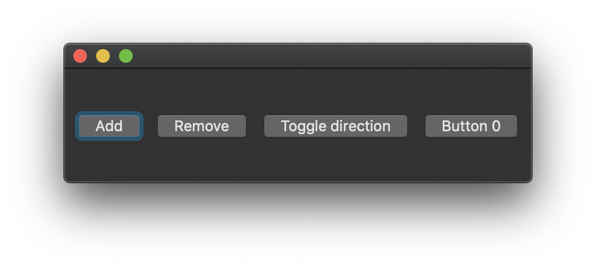
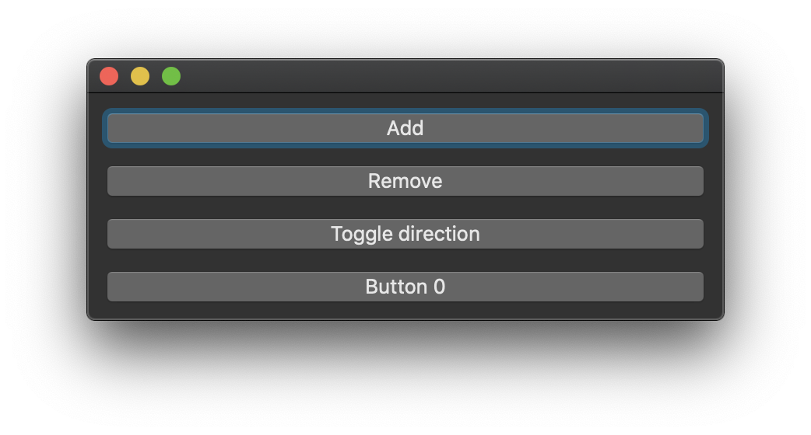

- 标签：前端
Jamie Birch 最近发布了 Svelte NodeGUI，一个用于在 Windows、Linux 和 macOS 上构建桌面端应用程序的框架。这是一个相较 Electron 来说更轻量的代替方案，让我们能够使用 Svelte 前端框架和编译器，以及 Qt 控件工具包，还可以用 HTM'L 和 CSS 子集，构建桌面端应用程序。
Svelte NodeGUI 的文档展现了它的基本原理以及使用它的好处，如下所示：
Svelte NodeGUI 是一个 Svelte 对 NodeGUI 的渲染器。这是一个高效的 JavaScript 库，与跨平台 GUI 库
Qt相捆绑。Qt 是最成熟最高效的构建桌面应用的库之一。这让 Svelte NodeGUI 在内存和 CPU 上更具效率，与其它的 JavaScript 桌面端 GUI 解决方案形成了明显的对比。一个用 Svelte NodeGUI 构建的 Hello World 应用程序在内存上比其他 GUI 解决方案少占用 20 MB。
有的开发者已经报告称一个基础的 Hello World 的用 Electron 构建的应用程序的尺寸会高达 115 MB 甚至是 275 MB。Svelte NodeGUI 则成功地通过不内置 Chromium 浏览器包，编译一个内存更优的尺寸更小的可执行文件。
相反，我们无法在 Svelte NodeGUI 应用程序中使用所有的浏览器中有的 API 以及 HTML 和 CSS 的功能。Svelte NodeGUI 应用程序本质上是一个 Node.js 应用程序，其用户界面由 Qt 控件如 QMainWindow、QCheckBox 构建的，我们可以使用 Qt 样式表语法样式化应用程序。它使用了 Flexbox 进行布局 —— 这是网络浏览器的一维布局方法。Qt 控件的数量和覆盖范围可能小于 HTML 原生元素 的数量和覆盖范围，这实际上也限制了我们 —— 我们只能使用 Qt 支持的 HTML 子集。Svelte NodeGUI 附带 13 种标签或称之为 UI 组件，包括按钮，图像标签，可编辑文本区域，进度条和窗口。
Qt 窗口小部件可能会发出事件（称为信号），可以监听事件并以编程方式将其与事件处理程序关联。NodeGUI 还提供了一组的内部事件，应用程序可以对其监听（即 QEvents）。Svelte NodeGUI 的文档提供了以下示例，说明了布局机制和事件语法：
<script lang="ts">
import { onMount } from "svelte";
import { Direction } from "@nodegui/nodegui";
import type { QPushButtonSignals } from "@nodegui/nodegui";
let additionalButtons: string[] = [];
let direction: Direction = Direction.LeftToRight;
function addHandler(): void {
additionalButtons = [...additionalButtons, `Button ${additionalButtons.length}`];
}
function removeHandler(): void {
additionalButtons = [...additionalButtons.slice(0, additionalButtons.length - 1)];
}
function toggleDirection(): void {
direction = ((direction + 1) % 4) as Direction;
}
onMount(() => {
(window as any).win = win; // Prevent garbage collection.
win.nativeView.show();
return () => {
delete (window as any).win;
};
});
</script>
<window bind:this={win}>
<boxView direction={direction}>
<button text="Add" on={addHandler} />
<button text="Remove" on={removeHandler} />
<button text="Toggle direction" on={toggleDirection} />
{#each additionalButtons as additionalButton (additionalButton)}
<button text={additionalButton}/>
{/each}
</boxView>
</window>
如前面的代码示例所示，常规的 Svelte 单文件组件语法用于描述应用程序逻辑。Svelte 的 onMount 生命周期挂钩用于显示原生应用程序窗口。窗口的内容被包装在 <window> 标签内，由四个按给定方向布置的按钮组成，用户可以通过单击按钮来切换。每次切换时，生成的桌面应用程序的用户界面都会在以下两个布局之间改变：
 
（来源：Svelte NodeGUI 文档）
尽管我们无法使用使用浏览器 API，我们可以从大量现有的 Node.js 软件包中挑选我们想要的功能（例如 Node Fetch）。我们也可以安装原生的 Node.js 模块并使用这些模块。我们还可以使用 Chromium 开发者工具调试我们的 Svelte NodeGUI 应用程序，就像开发 Node.js 应用程序那样。
该版本在 HackerNews 上引起了热烈的讨论。一位用户热烈地欢迎了桌面端原生应用程序的新功能，如下：
看起来真的很好！乍一看，这似乎是我在 HackerNews 上看到的最好的替代品。
除了一致的 GUI 层，我认为许多团队坚持使用 Electron 的一个被低估的原因是用于跨平台构建和升级的成熟工具。DIY 真的非常痛苦。
NodeGUI 目前似乎不支持交叉编译，这是否在计划中？升级、自动升级工具怎么样？代码签名？
react-electron-boilerplate，neutralino 和 tauri 则也同样是替代 Web 技术开发轻量级桌面应用程序的选项。Google 最近还发布了 Flutter 2，一个跨平台的 UI 工具包，致力于支持我们编写用于移动，网络，和单个代码库的桌面平台的应用程序。一名 HackerNews 读者还提及了 Sciter.js，它为 Sciter，一种可嵌入的 HTML / CSS / Script 引擎，提供了 JavaScript 接口：
VanilaJS 和 Sciter.JS 中的相同演示：https://github.com/c-smile/sciter-js-sdk（请参阅屏幕截图）。
二进制文件约为 5 MB，即 HTML / CSS + QuickJS + NodeJS 运行时。
与 50MB+ 的 NodeGUI 相对应，即 Node.JS + QT。
SvelteJS 也可以直接在 Sciter.JS 中使用。
Qt 针对商业和开源许可证提供了两种许可。NodeGUI 项目 的创建者则强调了许可对软件分发的影响：
只要遵守 LGPL 许可要求，你就可以免费将 Qt 用于商业应用程序。对于桌面应用程序，这相对容易实现。我们需要确保你正在动态链接到 Qt 库和额外的许可证和信用信息。更多信息请点击此处。
Svelte NodeGUI 则是根据 MIT 许可分发的开源项目。